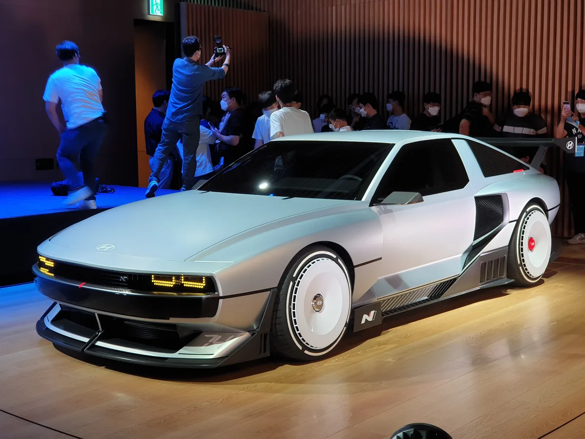
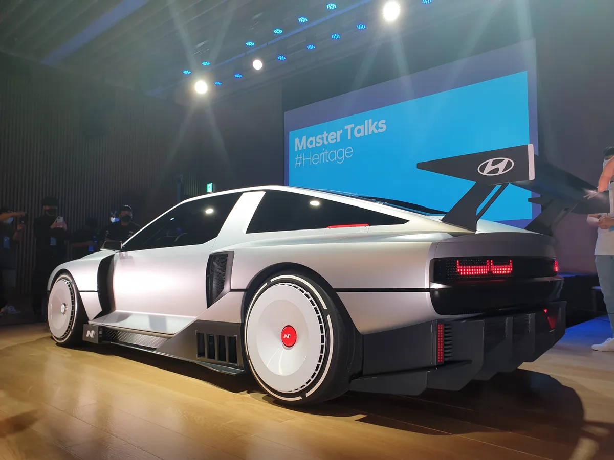
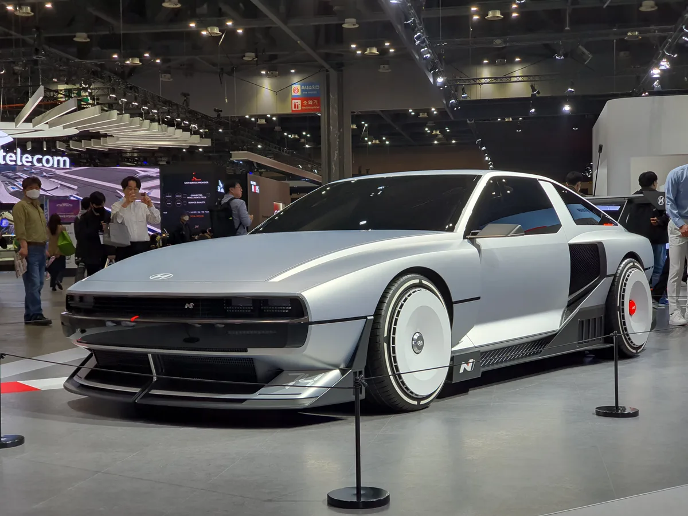

▲ N 비전 74 콘셉트. 하단 범퍼의 74 표기는 1974년 포니 쿠페 콘셉트에서 온 숫자다 ⓒ Damian B Oh, Wikimedia Commons (CC BY-SA 4.0)
2022년 여름, 현대차가 낯선 물건을 무대에 올렸습니다. 각진 쐐기 형태에 원형 휠 커버, 그리고 뒤에 커다란 윙. 이름은 N 비전 74였습니다.
그 뒤로 4년, 양산 이야기는 나왔다 들어가기를 반복했습니다.
그런데 최근 현대차가 미국과 캐나다에 상표 두 건을 출원한 사실이 확인됐습니다. "Hyundai N (Hybrid Hydrogen) Vision 74", 그리고 "Hyundai N74"입니다.
1. 상표 두 건이 의미하는 것
이번에 확인된 상표는 두 개입니다.
- Hyundai N (Hybrid Hydrogen) Vision 74 — 콘셉트카 이름 전체
- Hyundai N74 — 짧게 줄인 형태
주목할 부분은 두 번째입니다. 콘셉트카는 보통 긴 이름을 그대로 쓰지만, 양산차는 짧은 이름으로 정리되는 것이 일반적입니다. 'N74'라는 축약형을 별도로 출원했다는 것은 제품명으로 쓸 여지를 열어뒀다는 해석이 가능합니다.
다만 여기서 선을 그어야 합니다. 상표 출원은 권리를 미리 확보해두는 행위이기도 합니다. 자동차 회사들은 쓰지 않을 이름도 방어 목적으로 대량 출원합니다. 상표가 있다고 차가 나오는 것은 아닙니다.
현대차는 2030년까지 전기차 21종 라인업 계획을 발표하며 N 비전 74를 포함시킨 바 있습니다. 그러나 구체적인 출시 시기, 파워트레인, 생산 규모는 지금도 공개하지 않고 있습니다.

▲ 2022년 공개 당시의 N 비전 74. 각진 쐐기 실루엣과 원형 휠 커버가 특징이다 ⓒ Damian B Oh, Wikimedia Commons (CC BY-SA 4.0)
2. 1974년, 주지아로가 그린 포니 쿠페
'74'는 연도입니다. 1974년 토리노 모터쇼에서 현대차가 내놓은 포니 쿠페 콘셉트에서 왔습니다.
디자인을 맡은 사람은 이탈리아의 조르제토 주지아로입니다. 폭스바겐 골프 1세대, 로터스 에스프리, 들로리안 DMC-12를 그린 인물입니다.
포니 쿠페는 양산되지 못했습니다. 오일 쇼크와 자금 문제로 계획이 접혔습니다. 그러나 쐐기형 실루엣은 남았고, 현대차는 이 형태를 헤리티지 자산으로 다시 꺼내 쓰고 있습니다.
N 비전 74에서 이어진 요소는 이렇습니다.
- 낮고 긴 보닛과 급격히 꺾이는 리어 글라스 — 포니 쿠페의 기본 실루엣
- 사각 헤드램프 자리를 대신하는 픽셀형 조명 — 현대차의 최근 조명 언어
- 원형 휠 커버 — 공력 성능과 복고 감성을 동시에 노린 형태

▲ 후면에는 대형 리어 윙과 가로로 이어지는 테일램프가 들어갔다 ⓒ Damian B Oh, Wikimedia Commons (CC BY-SA 4.0)
3. 수소와 배터리를 같이 쓰는 방식
N 비전 74가 특이했던 이유는 구동 방식에 있습니다. 수소연료전지와 배터리를 함께 싣는 구조입니다.
| 항목 | 수치 |
|---|---|
| 최고출력 | 500kW 이상 (약 680마력) |
| 최대토크 | 900Nm 이상 |
| 배터리 용량 | 62.4kWh |
| 연료전지 출력 | 95kW급 |
| 수소탱크 | 4.2kg |
| 주행거리 | 600km 이상 |
왜 두 개를 같이 싣나. 고성능 주행에서는 순간적으로 큰 전력이 필요합니다. 배터리는 순간 출력에 강하고, 연료전지는 지속 공급에 강합니다. 서킷에서 배터리 전기차가 몇 바퀴 만에 출력을 줄이는 문제를, 연료전지가 계속 충전해주며 버티는 구조입니다.
대신 무겁고 비쌉니다. 수소탱크와 연료전지 스택이 통째로 더 들어가기 때문입니다. 이것이 양산 이야기가 계속 미뤄진 실질적인 이유이기도 합니다.

▲ 서울모빌리티쇼에 전시된 N 비전 74. 수소연료전지와 62.4kWh 배터리를 함께 싣는다 ⓒ Damian B Oh, Wikimedia Commons (CC BY-SA 4.0)
4. 지금 시점에 상표를 낸 이유
타이밍을 볼 필요가 있습니다. 현대차는 최근 고성능 N 브랜드를 전기차 쪽으로 확장해 왔습니다.
- 아이오닉5 N — 가상 변속과 사운드로 전기차 고성능의 방향을 제시
- 아이오닉6 N — 같은 소프트웨어 자산을 세단 형태로 이식
- 수소 상용 전략 — 넥쏘 후속과 상용 수소차로 연료전지 물량 확보
즉, N 비전 74가 요구하는 두 축이 각각 따로 자라 있습니다. 고성능 전기차 제어 기술과 연료전지 양산 기반입니다.
그렇다고 나온다는 뜻은 아닙니다. 이런 차는 판매량으로 수지를 맞추는 물건이 아닙니다. 브랜드 상징으로 소량 생산될 가능성이 더 큽니다.

▲ 현대차는 아이오닉5 N으로 전기차 고성능의 방향을 먼저 제시해 뒀다 ⓒ Ethan Llamas, Wikimedia Commons (CC BY-SA 4.0)
5. 정리
현대차가 미국과 캐나다에 "Hyundai N (Hybrid Hydrogen) Vision 74"와 "Hyundai N74" 상표를 출원했습니다. 짧은 축약형을 따로 낸 점에서 제품명 활용 가능성이 읽힙니다.
원형은 1974년 포니 쿠페 콘셉트이고, 콘셉트 제원은 500kW 이상·900Nm 이상·배터리 62.4kWh·연료전지 95kW급·수소 4.2kg·주행거리 600km 이상입니다.
다만 상표 출원은 양산 확정이 아닙니다. 출시 시기, 파워트레인, 생산 규모는 여전히 공개되지 않았습니다.